この草、君の庭にもいるかも？
オニタビラコ
鬼田平子
キク科
越年草
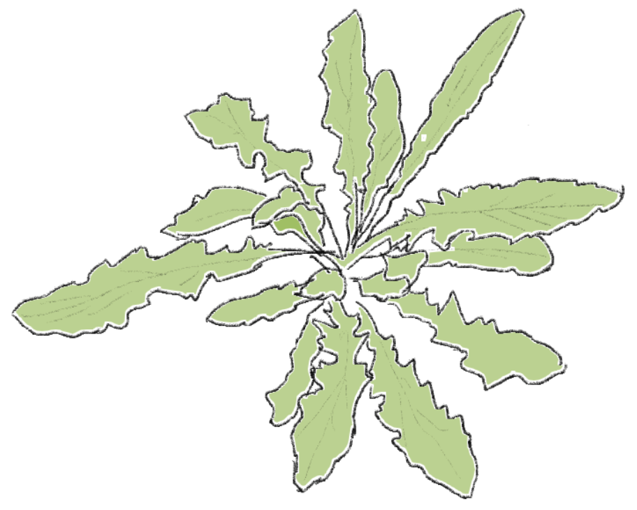黄色い花を咲かせる越年草。ロゼット葉から伸びる茎は最大1m。 直径7～8mmの花が春から秋まで咲き続けます。
キュウリグサ
胡瓜草
ムラサキ科
一年草
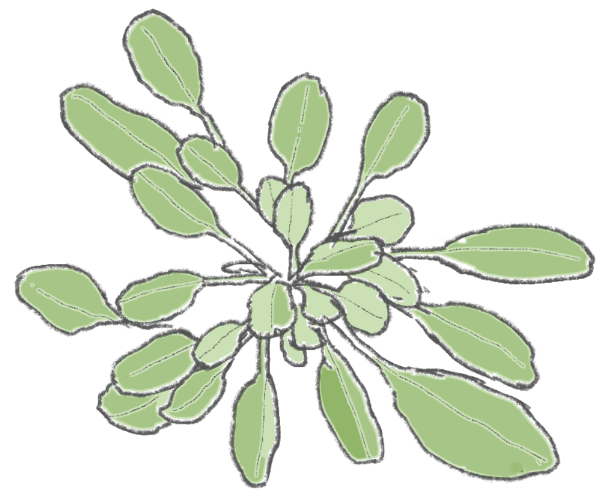春の道端で咲く薄水色の小花、キュウリグサ。 別名「タビラコ」。葉を揉むとキュウリの香りが漂います。
ヒメジョオン
姫女苑
キク科
越年草
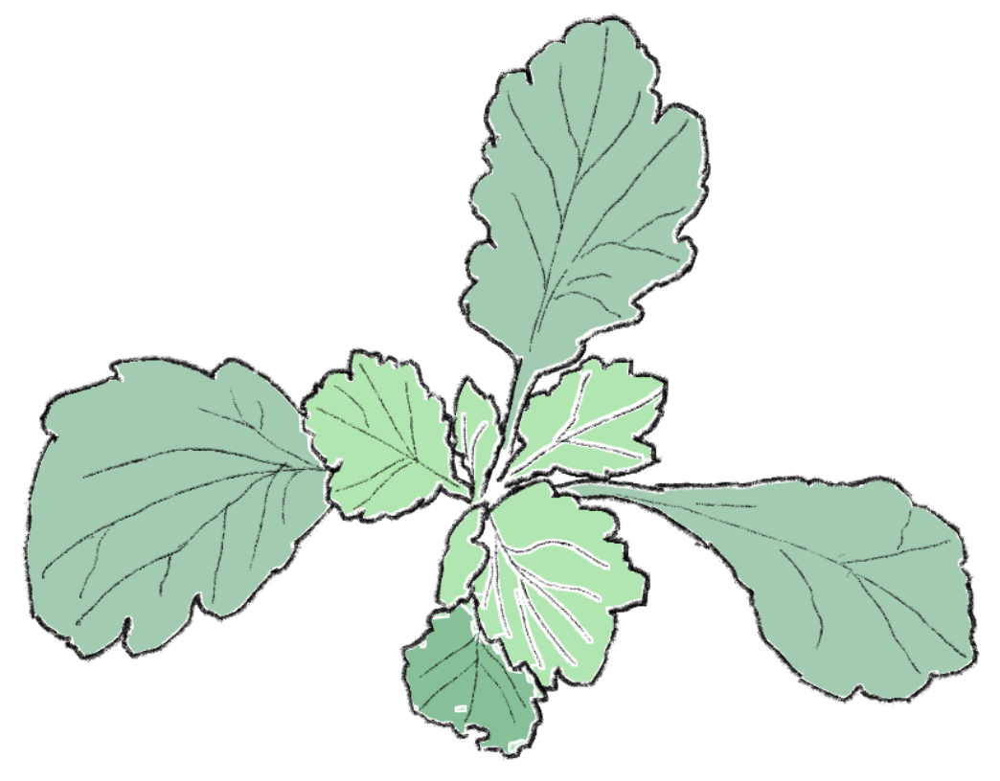白い小花が可憐なヒメジョオン。 北米生まれで、今や道端の常連さん。 ハルジオンとそっくりだけど、茎を抱かない葉と控えめな花がポイント。 「鉄道草」とも呼ばれた、どこでも咲ける雑草界の旅人です。
イヌタデ
犬蓼
タデ科
一年草
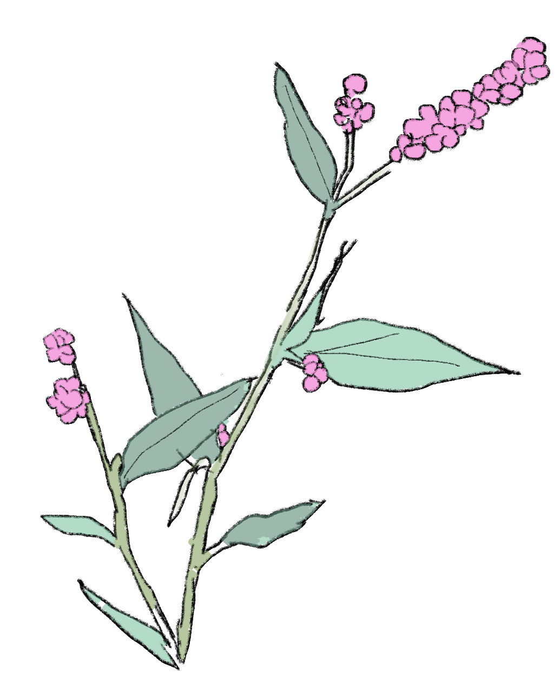道端で見かける赤い花穂のイヌタデ。 その名は「食べられないタデ」から来たけれど、紅紫の小さな花は可愛らしく、別名「アカノマンマ」として親しまれる存在。 意外にも花言葉は「お役に立ちたい」です。
オヒシバ
雄日芝
イネ科
一年草
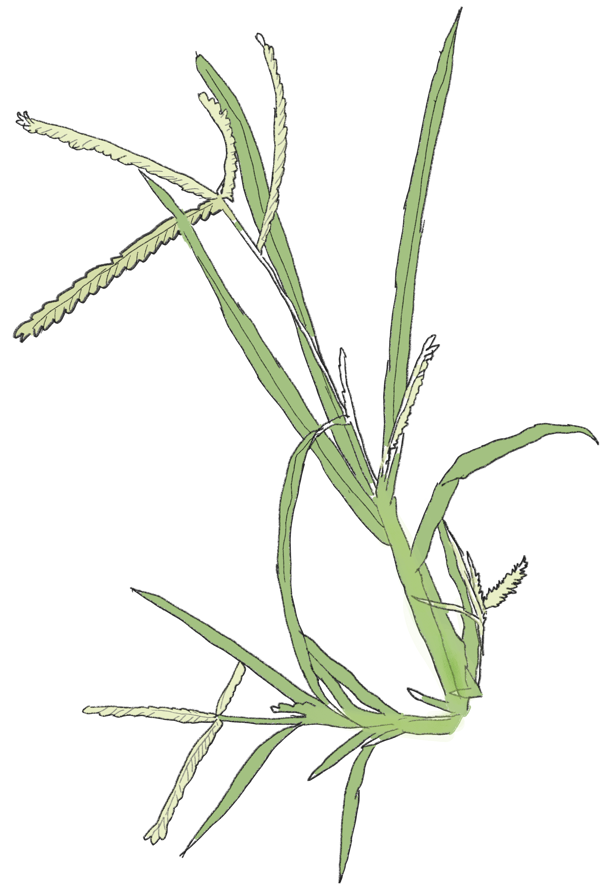道端にたくましく生えるオヒシバ。別名「チカラグサ」。 引き抜こうとすれば、その名の通り力を試される頑丈さ。 夏には放射状の穂を堂々と広げ、舗装道路の隙間からでもしぶとく顔を出します。
ハコベ
繁縷
ナデシコ科
一年草
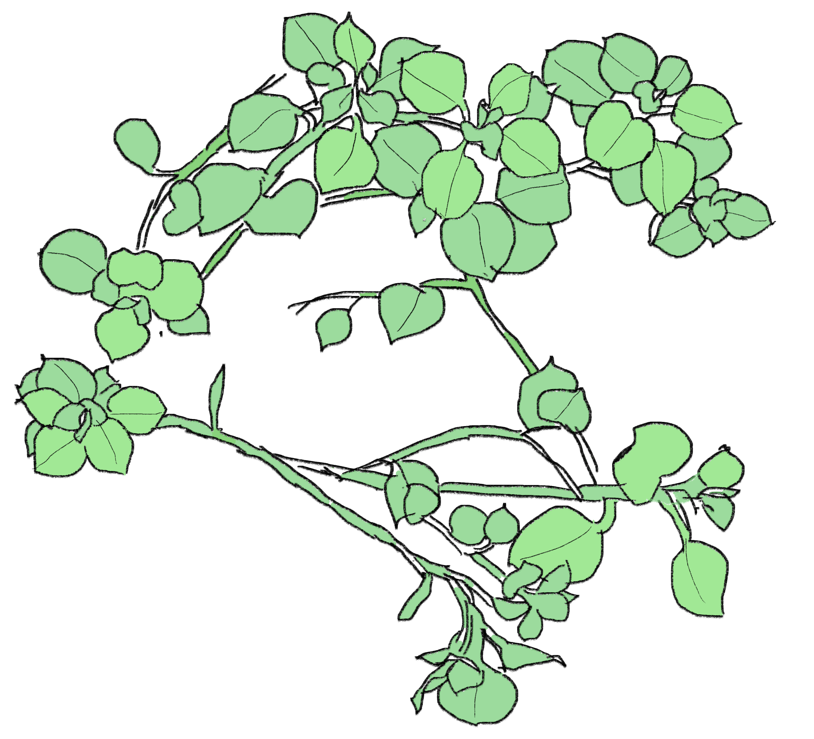春の七草として親しまれるハコベ。 小さな白い花は5枚の花弁が深く裂けて、まるで10弁のように見える不思議なデザイン。 道端や畑でよく見かけるこの草は、昔は「ハコベ塩」として歯磨き粉に使われ、小鳥たちのおやつにも愛されていました。
マルバツユクサ
丸葉露草
ツユクサ科
一年草
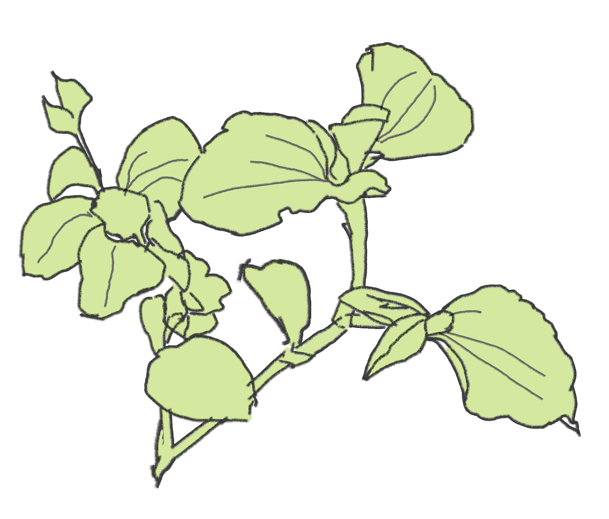地面を這うように広がるマルバツユクサ。 夏には淡青色の小さな花を咲かせ、温暖な地域から北へと勢力を広げています。 ふんわりした丸い葉が特徴で、どこにでも根を下ろすその生命力は頼もしささえ感じさせます。
カタバミ
片喰
カタバミ科
多年草
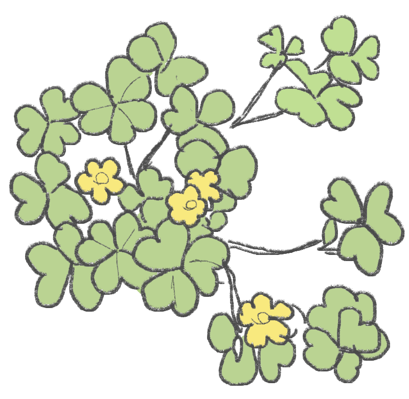ハート型の葉と黄色い花が愛らしい雑草。 実が弾けて種を飛ばすそのたくましさから家紋にも使われました。 葉にはさわやかな酸味があり、サラダやハーブとして楽しむこともできます。 さっぱりした風味がちょっと意外な魅力です。
キキョウカタバミ
桔梗片喰
カタバミ科
多年草
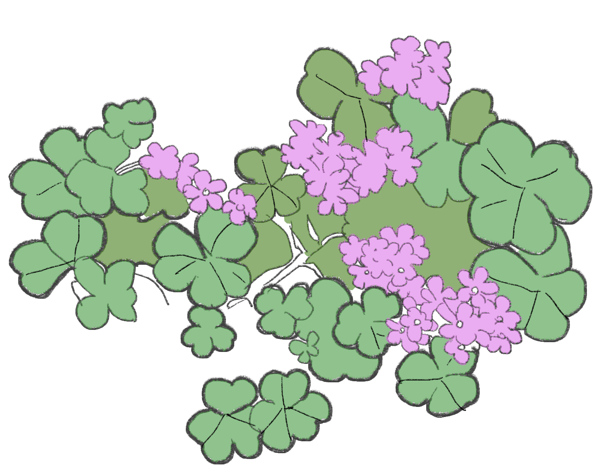南アメリカ生まれの帰化植物。 淡紅色の花を咲かせる美しい姿から観賞用に人気ですが、広がりすぎるのが玉にキズ。 地下の鱗茎で増え、これが実は食用にもなるというちょっとした実力派です。
スギナ
杉菜
トクサ科
多年草
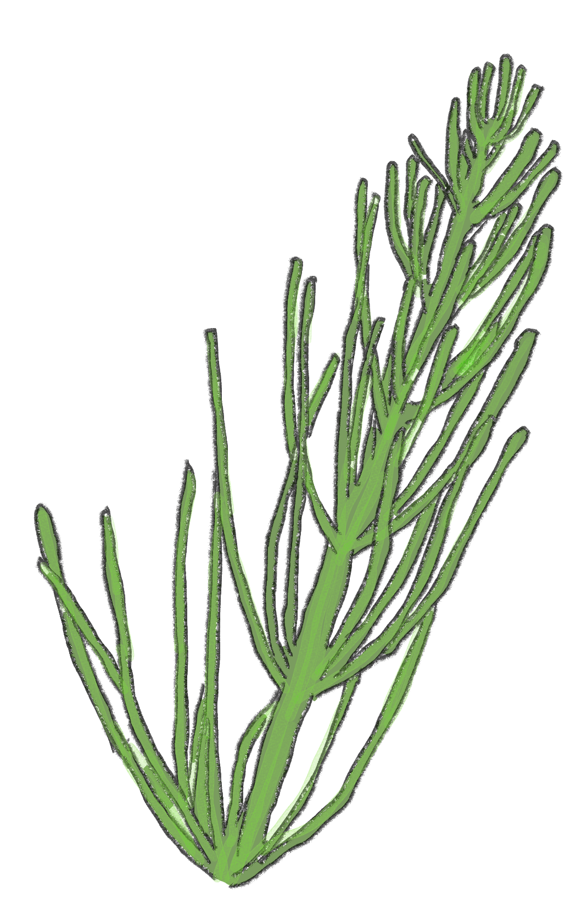杉に似た見た目が名前の由来の多年草。 春には胞子茎の「ツクシ」が顔を出し、食用としても親しまれています。 道端や庭先でその独特な姿が季節の訪れを教えてくれる植物です。
セイヨウオオバコ
西洋大葉子
オオバコ科
多年草
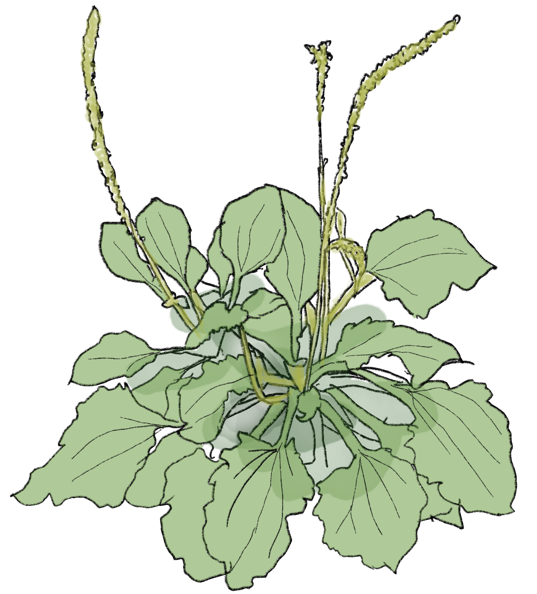ヨーロッパ原産で、日本全国に広がった多年草。 ロゼット状の葉と直立した花穂が特徴で、道端や石畳の隙間でもたくましく成長します。 夏には穂状の花が咲き、風を利用して種を広げる姿が印象的です。
ドクダミ
蕺草
ドクダミ科
多年草
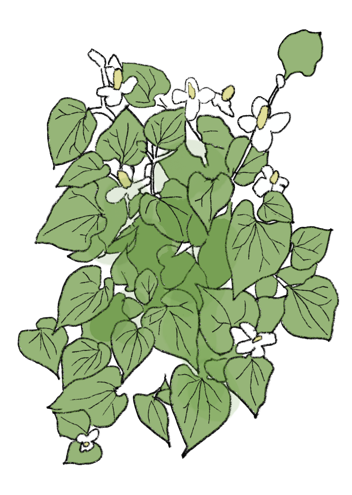強い香りとハート形の葉が特徴の多年草。 その名前に反して毒はなく、古くから薬草「十薬」として親しまれてきました。 湿った場所に群生し、夏には白い苞に包まれた小さな花を咲かせる身近な植物です。
ハマスゲ
浜菅
カヤツリグサ科
多年草
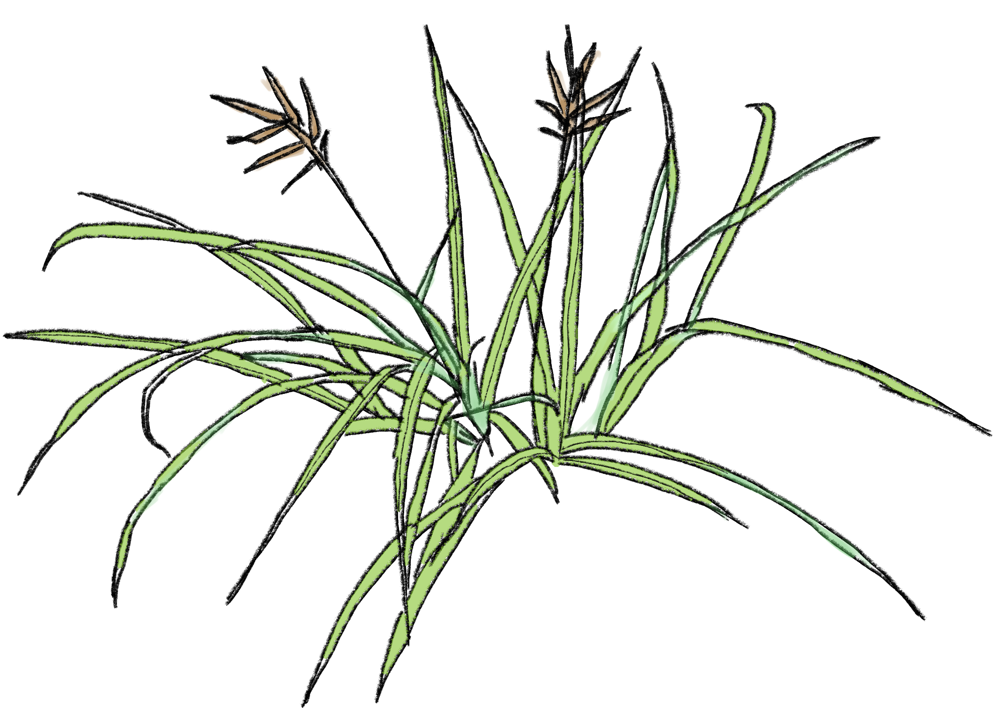乾燥と強い日差しに負けないタフな多年草。 細長い深緑の葉と、初夏から秋に咲く赤褐色の小穂が特徴です。 地下には頑丈な塊状の根茎を持ち、アスファルトを突き破るほどの生命力を発揮。 古代エジプトでは芳香剤として使われた歴史もあります。
ヒメクグ
姫莎草
カヤツリグサ科
多年草
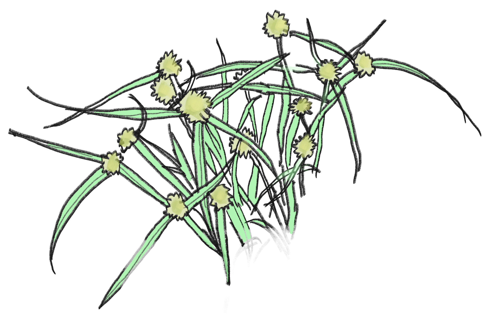水田や湿地によく生える多年草で、高さ30cmほどに成長します。 三角形の茎の先に茶色がかった丸い花序をつけ、黄緑色の葉が地面を這うように広がります。 湿地でよく見られる植物の一つです。